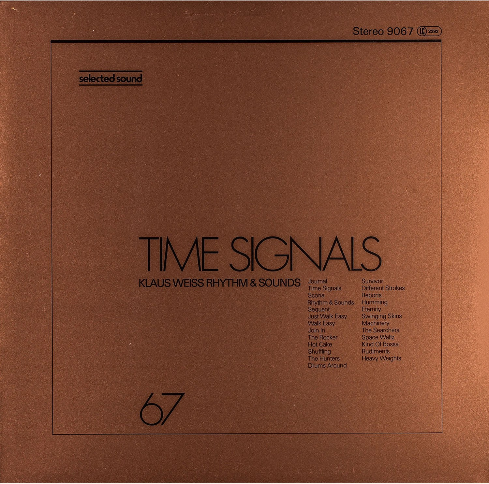
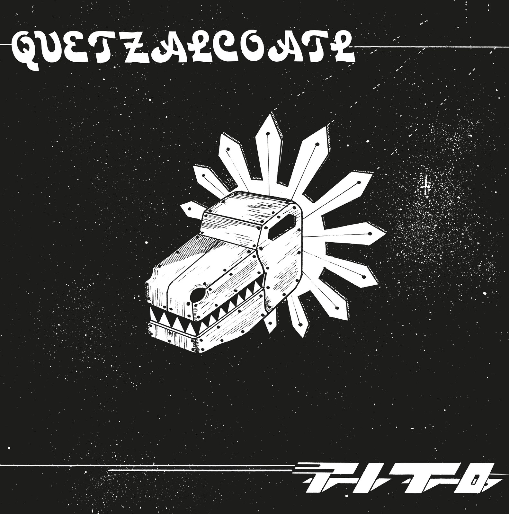
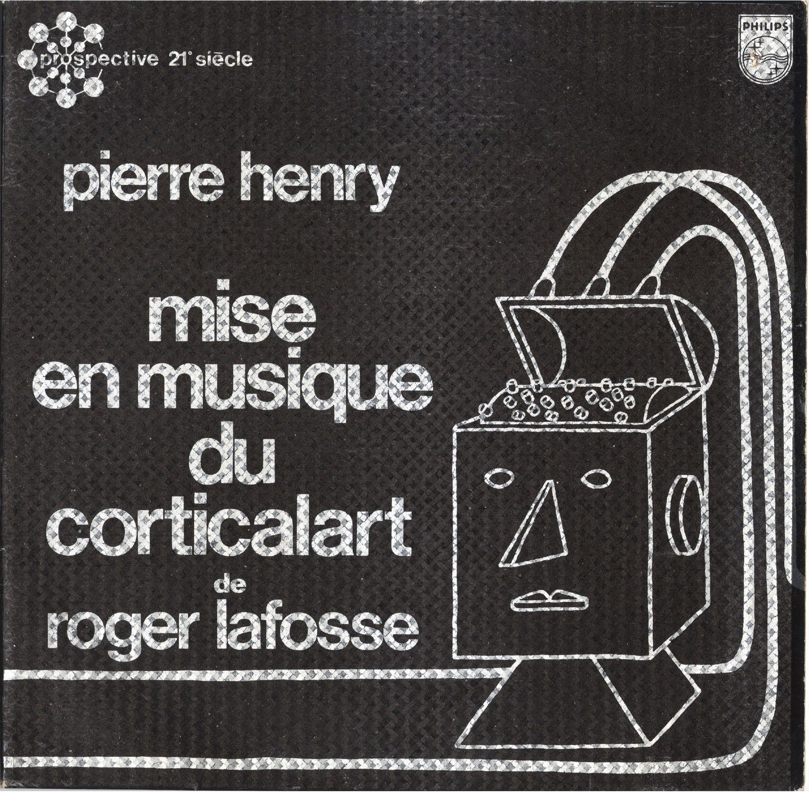

CRVI000125Yusaku Kamekura - Expo '70
Japan World Exposition, Osaka · 'Progress and Harmony for Mankind' · 1970
Japan World Exposition, Osaka · 'Progress and Harmony for Mankind' · 1970

CRVI000164Colosseum II - Electric Savage
Designed by John Pasche · MCA MCF2800 · 1977
Designed by John Pasche · MCA MCF2800 · 1977

CRVI000082Klaus Weiss - Time Signals
Designer unknown · Selected Sound · 1978
Designer unknown · Selected Sound · 1978

CRVI000032Earle Brown - Music By Earle Brown
Artwork by Judith Lerner · Composers Recordings Inc. · 1974
Artwork by Judith Lerner · Composers Recordings Inc. · 1974

CRVI000120Tadanori Yokoo - Tadanori Yokoo — Stedelijk Museum Amsterdam
Exhibition poster, 22.2 t/m 14.4 1974 · 1974
Exhibition poster, 22.2 t/m 14.4 1974 · 1974

CRVI000141Shin Matsunaga - Shiseido Sun Oil
Offset lithograph · 1971
Offset lithograph · 1971

CRVI000107Masuteru Aoba - The Bread Is For Peace
戦争に使うパンはない · anti-war poster · carries an Arthur Koestler passage in twelve languages · c1975
戦争に使うパンはない · anti-war poster · carries an Arthur Koestler passage in twelve languages · c1975

CRVI000152Cressida - Asylum
Designed by Keef · Vertigo 6360 025 · 1971
Designed by Keef · Vertigo 6360 025 · 1971

CRVI000111Kiyoshi Awazu - Contemporary Japanese Sculpture Exhibition — Form and Color
現代日本彫刻展 形と色 · 1973
現代日本彫刻展 形と色 · 1973

CRVI000017David Chesworth - 50 Synthesizer Greats
Designed by Geronimo Creative Services · 1979
Designed by Geronimo Creative Services · 1979

CRVI000130Koichi Sato - New Music Media, New Magic Media
1974
1974

CRVI000145Gentle Giant - Octopus
Designed by Roger Dean · 1972
Designed by Roger Dean · 1972

CRVI000126Shigeo Fukuda - The World of Shigeo Fukuda in U.S.A.
M.H. de Young Memorial Museum, San Francisco · Junior Art Center, Los Angeles · Santa Barbara Museum of Art · 1971
M.H. de Young Memorial Museum, San Francisco · Junior Art Center, Los Angeles · Santa Barbara Museum of Art · 1971

CRVI000097Tonto - It's About Time
Designer unknown · Polydor · 1974
Designer unknown · Polydor · 1974

CRVI000049Jon Appleton - The World Music Theatre Of Jon Appleton
Designed by Ronald Clyne · 1974
Designed by Ronald Clyne · 1974

CRVI000110Kiyoshi Awazu - The 6th Contemporary Japanese Sculpture Exhibition
第6回現代日本彫刻展 · Ube City Open-Air Sculpture Museum, Tokiwa Park, Ube, Yamaguchi · 1975
第6回現代日本彫刻展 · Ube City Open-Air Sculpture Museum, Tokiwa Park, Ube, Yamaguchi · 1975

CRVI000179Genesis - Nursery Cryme
Designed by Paul Whitehead · Charisma CAS1052 · 1971
Designed by Paul Whitehead · Charisma CAS1052 · 1971

CRVI000069Cluster - Cluster Il
Designer unknown · Brain · 1972
Designer unknown · Brain · 1972

CRVI000053Pierre Schaeffer - Le Trièdre Fertile
Designed by Stephen O'Malley · Philips · 1978
Designed by Stephen O'Malley · Philips · 1978

CRVI000166Soft Machine - Seven
Designed by Roslav Szaybo · CBS 65799 · 1973
Designed by Roslav Szaybo · CBS 65799 · 1973

CRVI000022Iannis Xenakis - Electro-Acoustic Music
Designed by Iannis Xenakis, Paula Bisacca · Nonesuch · 1970
Designed by Iannis Xenakis, Paula Bisacca · Nonesuch · 1970

CRVI000175Third Ear Band - Third Ear Band
Designer unknown · Harvest SHVL773 · 1970
Designer unknown · Harvest SHVL773 · 1970

CRVI000075H. Tical - Impact Synthesized Sound And Music
Designer unknown · Vedette Records · 1971
Designer unknown · Vedette Records · 1971

CRVI000127Koichi Sato - Sakurahime Azuma Bunsho
桜姫東文章 · Shinjuku Kinokuniya Hall · 1976 Tomin Arts Festival · 1976
桜姫東文章 · Shinjuku Kinokuniya Hall · 1976 Tomin Arts Festival · 1976

CRVI000157Kazumasa Nagai - Exhibition of Graphic Art
Designed by Kazumasa Nagai · 1978
Designed by Kazumasa Nagai · 1978

CRVI000060Tito - Quetzalcóatl
Designed by Tito, Manuel Fornos · Discos Tiabi · 1977
Designed by Tito, Manuel Fornos · Discos Tiabi · 1977

CRVI000070Pierre Henry - Mise En Musique Du Corticalart De Roger Lafosse
Designer unknown · Philips · 1971
Designer unknown · Philips · 1971

CRVI000081Mort Garson - Didn’t You Hear?
Designer unknown · Custom Fidelity · 1970
Designer unknown · Custom Fidelity · 1970

CRVI000134Shigeo Fukuda - Shigeo Fukuda
Exhibition, Keio Department Store SF Art Gallery, 23–28 May 1975 · 1975
Exhibition, Keio Department Store SF Art Gallery, 23–28 May 1975 · 1975

CRVI000095Martin Davorin Jagodic - Tempo Furioso (Tolles Wetter)
Designer unknown · nova musicha - n. · 1975
Designer unknown · nova musicha - n. · 1975

CRVI000077Fluence - Fluence
Designer unknown · Pôle Records · 1975
Designer unknown · Pôle Records · 1975